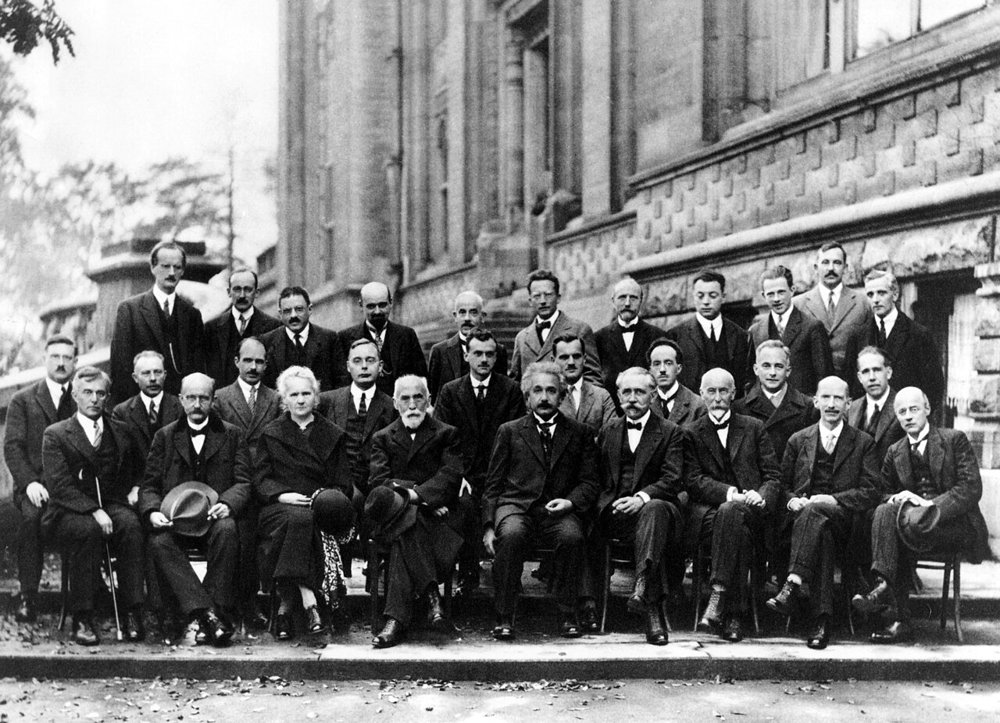

In October 1927, the most foundational assumption of the modern West — that the universe is deterministic and fully knowable — received its final dismantling. The people in this photograph knew it was happening. Some of them had swung the hammer.
The conference was titled "Electrons and Photons," but what was really at stake was the nature of reality itself. Heisenberg had published the uncertainty principle six months earlier. Bohr had presented complementarity at Como just weeks before. Schrödinger's wave equation was barely a year old. De Broglie had come to present a deterministic alternative — pilot-wave theory — and watched Pauli demolish it.
Einstein, the most famous scientist alive, spent the conference constructing thought experiments to break quantum mechanics. Bohr spent the conference dismantling them, sometimes staying up all night. Ehrenfest, watching from the back row, wrote: "like a game of chess."
What follows is each person as they were that day. Not as Wikipedia remembers them — flattened into a lifetime of achievements — but as they saw each other, in a room in Brussels, at a moment when the foundations of physics were shifting under their feet.
American physical chemist. The applied scientist among theoreticians. His work on surface chemistry and gas-filled incandescent lamps earned him the Nobel Prize in Chemistry five years later (1932). At this conference, he represents a practical tradition largely untouched by the quantum interpretation debates swirling around him.
The man who started all of this. In December 1900, to explain black-body radiation, he introduced the quantum of action — energy comes in discrete packets. He called it "an act of desperation." He spent the next decade trying to reconcile his own discovery with classical physics. He failed.
Now, twenty-seven years later, he sits in the front row and watches the young men take his quantum to places he never intended. Born's probabilistic interpretation, Heisenberg's uncertainty, Bohr's complementarity — these are not refinements of his idea, they are a revolution built on his foundation. Like Einstein, he is uncomfortable. Unlike Einstein, he does not fight. He listens.
She holds two Nobel Prizes — Physics (1903) and Chemistry (1911) — and remains the only person to have won in two different sciences. Pierre has been dead for twenty-one years.
She is visibly exhausted. Decades of handling radioactive materials without protection have ravaged her health: her fingers are burned, her eyesight is failing, she carries test tubes of radium in her pockets. She will not live another seven years.
She sits between Lorentz and Einstein, looking tired, resolute, and entirely unimpressed by the theoretical fireworks around her.
He has chaired every Solvay Conference since the first in 1911. His Lorentz transformations became the mathematical foundation of Einstein's special relativity. He is respected by everyone in the room — perhaps the only person both Einstein and Bohr would defer to.
He will be dead in four months. This is his last conference, though no one knows it. When he dies in February 1928, Einstein and Curie attend his funeral.
The most famous scientist alive. He has held the Nobel Prize for six years. General relativity is twelve years old. But he has come to Brussels to fight.
Quantum mechanics — the theory his own photoelectric work helped launch — has grown into something he cannot accept. His objection is not mere conservatism. He believes quantum mechanics violates locality — "spooky action at a distance." He constructs thought experiment after thought experiment to reveal contradictions. Bohr answers each one.
He sits in the front row, arms crossed, looking neither defeated nor persuaded.
Student of Pierre Curie, veteran of the Cavendish under J.J. Thomson. When Lorentz dies next February, Langevin will succeed him as president of the Solvay conferences. A bridge between experiment and theory, between the French and Germanic physics communities, between the generation of Curie and the generation of de Broglie.
Swiss experimentalist. His measurements of relativistic mass increase helped confirm special relativity. Einstein was one of his students at Zurich Polytechnic.
About to win the Nobel Prize — the announcement comes weeks after this conference, shared with Compton. His cloud chamber made the invisible visible: for the first time, you could see individual particle tracks. While Bohr and Einstein argue about whether God plays dice, Wilson's cloud chamber shows you the dice landing.
British physicist. Thermionic emission, Richardson's law. Nobel Prize the following year (1928). Solid experimentalist, tangential to the quantum interpretation debates.
Dutch physicist. Dipole moments, molecular structure, Debye model of specific heat. Nobel Prize in Chemistry (1936). Schrödinger's predecessor at Zurich.
Danish physicist. Molecular gas flow, the Knudsen number. Kinetic theory specialist, peripheral to the quantum debates at the heart of this conference.
The youngest-ever Nobel laureate in physics (age 25, shared with his father in 1915). X-ray crystallography, Bragg's law. Later directed the Cavendish Laboratory during the discovery of DNA's structure.
Bohr's chief assistant for nearly a decade. Co-developed the Kramers-Heisenberg dispersion formula with the young Heisenberg in 1925. The "K" in the WKB approximation. He understands Bohr's thinking better than almost anyone in the room — but Heisenberg, five years younger, has already surpassed him in reputation.
Completed his PhD just one year ago. His transformation theory showed Heisenberg's matrix mechanics and Schrödinger's wave mechanics were the same theory in different mathematical clothing. Says almost nothing at the conference. Within a year he will publish the Dirac equation, predict antimatter, and change physics again.
In the photograph he looks slightly elsewhere, as if the social occasion around him is a minor inconvenience interrupting something more important happening inside his head.
About to share the Nobel Prize with C.T.R. Wilson. The Compton effect — X-rays scattering off electrons like particle collisions — is one of the experimental facts driving everything being debated in this room. Wave-particle duality exists as a scientific problem partly because of his results.
The 7th Duc de Broglie. Lorentz specifically invited him to present his pilot-wave theory — a deterministic alternative to Copenhagen. Pauli attacks it. De Broglie cannot answer. He abandons the theory for twenty-five years, until Bohm independently rediscovers it in 1952.
This conference is where a viable alternative to Copenhagen was killed. The road not taken.
His probabilistic interpretation of the wave function — the Born rule — is one of the pillars being debated. "God does not play dice," Einstein tells him directly. They are personal friends. The disagreement will last the rest of their lives.
He supervised both Heisenberg and Pauli at Göttingen. The Nobel committee will not recognize the Born rule until 1954 — twenty-eight years after he proposed it.
His Institute in Copenhagen has become the world center for quantum theory. Complementarity, presented at Como weeks before, is fully formed. The conference becomes his arena. Einstein attacks with thought experiments at breakfast; Bohr spends the day demolishing each one.
Bohr wins. Not by proving Einstein wrong — Einstein's concerns about locality will prove prescient — but by demonstrating that the Copenhagen interpretation is internally consistent and experimentally productive. The physics community follows Bohr. The old certainty is gone.
Swiss-Belgian physicist. His famous stratospheric balloon flights and deep-sea bathyscaphe explorations come later. Hergé's inspiration for Professor Calculus in Tintin.
French physicist. First to definitively demonstrate that potassium and rubidium are naturally radioactive. Pioneer in ultracentrifuge development.
The conference's gadfly — the man who asks the devastating question. Watching the Bohr-Einstein debates, he writes: "like a game of chess. Einstein all the time with new examples... Bohr from out of philosophical smoke clouds constantly searching for the tools to crush one example after the other."
He is close friends with both combatants. He stays at Einstein's house; he stays at Bohr's. He cannot choose between them.
Six years from now, on 25 September 1933, Ehrenfest will shoot his youngest son Wassik and then himself. His suicide note is addressed to Bohr, Einstein, and the other friends from this circle. He writes that he can no longer keep up with physics. In the photograph he stands in the back row, looking alert and engaged. He has six years left.
Belgian physical chemist. Ernest Solvay's scientific liaison. Grandson of Alexander Herzen, the Russian political thinker. Institutional bridge between the patron and the physicists.
Belgian mathematician and physicist. Considered the father of irreversible thermodynamics. Friend of Einstein.
His wave equation is barely a year old. He wants it to mean that particles are actually waves. Born says no: the wave function gives you probabilities, not physical waves. Schrödinger sides with Einstein and de Broglie against Copenhagen.
Years later he will invent the famous cat thought experiment precisely to expose the absurdity of quantum superposition taken literally. He never comes to terms with Born's interpretation. Neither does Einstein. The universe does not appear to care.
Belgian physicist. Worked under Kamerlingh Onnes at the Leiden cryogenics laboratory. Administrative organizer of the Solvay conferences.
His exclusion principle is two years old. He is already feared. Godson of Ernst Mach. At this conference, Pauli is the executioner. When de Broglie presents pilot-wave theory, Pauli dismantles it with a specific technical objection. The theory dies in the room. Whether his objection was actually fatal (Bohm will show it wasn't) or merely persuasive is one of the great what-ifs in physics.
"Not even wrong" is his dismissal for theories too vague to be tested. He stands next to Heisenberg — friends and rivals since student days. The Knabenphysik in full force.
Matrix mechanics is two years old. The uncertainty principle is six months old. He is at the height of his powers, part of the Knabenphysik — the physics of boys. He watches his mentor Bohr debate the most famous scientist in the world, and win. His principle is at the center of the argument.
He does not yet know what the next eighteen years will bring: the Nobel at 31, the decision to stay in Germany under the Nazis, the uranium project, the ambiguity that will haunt his reputation forever. In October 1927 he is simply brilliant, young, and certain that the universe is uncertain.
Dirac's doctoral supervisor. Rutherford's son-in-law. The bridge between British physics and the continental quantum revolution. He reads the German papers and explains them to his students. Dirac, sitting nearby, is the most brilliant of his 64 doctoral students — but far from the only one who owes his career to Fowler.
French physicist. The "B" in the WKB approximation. Son of physicist Marcel Brillouin. His most famous contribution — Brillouin zones — comes three years later (1930). Important contributions to quantum mechanics, solid-state physics, and later, information theory.